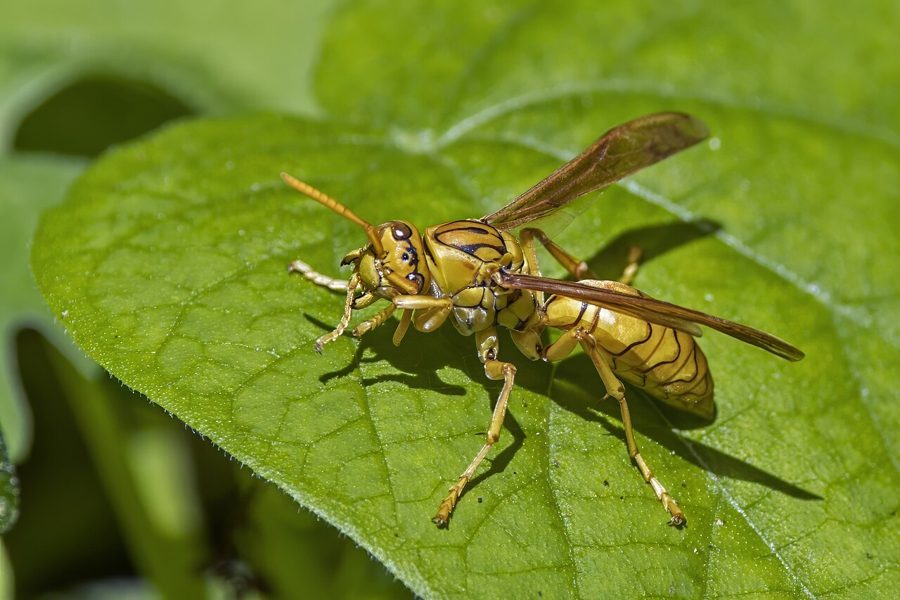

ततैयाYellow Paper Wasp
Polistes olivaceus · Vespidae · INS-0037

- Scientific name
- Polistes olivaceus (Deg., 1773)
- Family
- Vespidae
- Hindi
- ततैया
- Status here
- native
- IUCN
- not evaluated
When to look कब देखें
Expected mainly in March, April, May, June, July, August, September, October.
ततैया / Yellow Paper Wasp
Polistes olivaceus (Deg., 1773) — Vespidae
ततैया (येलो पेपर वास्प) — पूर्वी उत्तर प्रदेश के ग्रामीण और अर्ध-शहरी घरों, बरामदों और बगीचों में पाया जाने वाला एक मध्यम-बड़ा, सामाजिक निवासी कीट है। इसे स्थानीय रूप से "हाड़ा" भी कहा जाता है। यह पीले और काले रंग का होता है और इसकी पतली कमर (petiole) इसकी मुख्य पहचान है। ये ततैया सूखी लकड़ी या बाँस के रेशों को अपनी लार से चबाकर एक भूरे रंग का कागज़ जैसा पदार्थ बनाते हैं, जिससे वे छतों, छज्जों या झाड़ियों के नीचे खुले कोष्ठकों वाला लटकता हुआ छत्ता (paper comb nest) बनाते हैं। यद्यपि ये छेड़े जाने पर रक्षात्मक रूप से दर्दनाक डंक मार सकते हैं, लेकिन ये किसानों और बागवानों के महत्वपूर्ण मित्र कीट हैं। वे फसलों को नुकसान पहुँचाने वाले हानिकारक कैटरपिलर, मक्खियों और अन्य कीड़ों का शिकार करके अपने लार्वा को खिलाते हैं, जिससे प्राकृतिक कीट नियंत्रण में मदद मिलती है।
Quick Identification त्वरित पहचान
| Feature | Description |
|---|---|
| Size | Medium-to-large wasp; body length 18–24 mm; wingspan 32–40 mm |
| Colouration | Bright yellow body marked with fine black bands and patterns; head is yellow |
| Body Shape | Slender, elongate body; abdomen connects to the thorax via a narrow waist (petiole) |
| Wings | Narrow, translucent wings with a faint reddish-brown or smoky tint |
| Nest | An open, single-tier papery comb hanging from a central stalk under roofs or branches |
| Stinger | Females possess a smooth stinger that can sting repeatedly; males are stingless |
Field tip: Look under roof eaves, window frames, or dry bamboo poles in summer. Search for a small, grey-brown papery comb hanging from a single central stalk, with bright yellow-and-black wasps crawling over it. Do not approach closely or vibrate the structure, and they will ignore you.
Morphology आकारिकी
Biometrics (typical measurements for adult specimens in local gardens):
| Measurement | Range |
|---|---|
| Body length | 18.0–24.0 mm |
| Wingspan | 32.0–40.0 mm |
Body details: The body is smooth and relatively hairless. The head is broad, dominated by large, kidney-shaped compound eyes and three simple ocelli. The antennae are dark at the base and yellow toward the tips. The thorax is robust, marked with yellow and black patterns. The abdomen is spindle-shaped, connected by a narrow petiole, and features alternating yellow and black transverse bands. The legs are long, slender, and yellow. Workers (sterile females) and queens (fertile females) are morphologically similar, while males are distinguished by longer, curved antennae and a slightly flatter face.
Behaviour & Ecology व्यवहार और पारिस्थितिकी
Eusocial paper-maker.
- Nest construction: Workers chew weathered wood, bamboo fibers, and dry stalks, mixing them with saliva to form a malleable paper pulp. They apply this pulp in thin layers, which dries into a light, durable, grey-brown paper comb.
- Social hierarchy: A colony has a dominant queen who lays eggs, and workers who maintain the nest, forage for food, and protect the colony.
- Defensive behavior: Generally non-aggressive when foraging. However, they aggressively defend their nest if it is shaken, vibrated, or approached within a metre, attacking and stinging the intruder.
Ecological Role पारिस्थितिक भूमिका
Predatory biological controller.
- Pest regulation: Adults capture larvae of lepidopteran pests, carrying them back to the nest. A single colony removes thousands of crop-damaging caterpillars during the summer.
- Pollination support: Adults frequently visit agricultural and wild flowers to feed on nectar, assisting in the pollination of local flora.
Life Cycle / Phenology जीवन चक्र
- Colony initiation: In spring (March), a fertilized queen (foundress) emerges from winter hibernation and begins a new nest. She constructs the first few paper cells and lays eggs.
- Worker emergence: The queen feeds the first batch of legless white grubs. Once these pupate and emerge as adult workers, they assume all foraging and construction tasks, allowing the queen to focus solely on egg-laying.
- Colony dissolution: In late autumn (October), new queens and males emerge, mate, and the old colony dies. The newly fertilized queens hibernate under bark or tile cracks for the winter.
Host Plants or Prey आहार
Prey:
- Caterpillars of butterflies and moths (including larvae of [INS-0020 Common Emigrant] and various crop bollworms).
- Small flies, bugs, and grasshopper nymphs.
Adult diet:
- Floral nectar (from species like [FLR-0009 Neem], mustard, and cucurbits).
- Fruit juices and water.
Predators / Natural Enemies शत्रु
- Birds: Insectivorous birds like rollers (such as [BRD-0003 Indian Roller]) and kingfishers catch flying wasps.
- Hornets: Larger Oriental Hornets (Vespa orientalis) raid nests, killing adults to feed on larvae.
- Arachnids: Giant wood spiders capture flying wasps in their tough webs.
Agricultural / Human Relevance कृषि प्रासंगिकता
Beneficial agricultural ally.
- Natural pest control: Preserving wasp nests around home gardens and fields reduces the abundance of crop caterpillars without chemical insecticide use.
- Sting first aid: Wasp venom is alkaline. If stung, wash the area with soap and water, and apply an acidic wash (like vinegar or lemon juice) along with a cold compress to relieve swelling.
Expected Locally स्थानीय रूप से अपेक्षित
Not a field record. Written from published accounts for eastern Uttar Pradesh. No confirmed local sighting yet — if you have seen it, that is what the atlas needs.
अभी तक स्थानीय पुष्टि नहीं। यह विवरण प्रकाशित स्रोतों से है, किसी अवलोकन से नहीं।
Commonly seen nesting under the roof eaves of mud houses (kachha ghar), thatch roofs, and window frames in Basti Sadar and Kaptanganj blocks. Farmers recognize the wasp (tataiya) and generally avoid disturbing nests unless they block doorways.
Distribution वितरण
Global range: Widespread across the Indo-Pacific region, covering South Asia, Southeast Asia, southern China, and parts of the Pacific.
In India: Common throughout the agricultural plains and deciduous forest zones.
In Uttar Pradesh: Abundant resident across all rural and urban districts.
In Basti district / eastern UP: Observed in all residential and farming zones.
Research Questions शोध प्रश्न
Anyone can investigate these | कोई भी इन प्रश्नों की जाँच कर सकता है
- What is the average number of cells in a Yellow Paper Wasp nest found under village eaves in Basti? / बस्ती में ग्रामीण घरों के छज्जों के नीचे पाए जाने वाले पीले ततैया के छत्ते में कोष्ठकों (cells) की औसत संख्या क्या होती है? — Count and record cell counts of inactive or abandoned nests.
- How does the foraging activity of paper wasps change during different hours of a summer day? / गर्मियों के दिनों में अलग-अलग घंटों के दौरान ततैया की भोजन खोजने की गतिविधि (foraging activity) कैसे बदलती है? — Monitor and count arrivals at the nest entrance over 15-minute periods.
- What plant species are most frequently visited by adult wasps for nectar feeding in local gardens? — Document wasp feeding visits on different garden flowers.
- How do wasps behaviorally cool their nest during peak summer afternoons? — Observe if wasps carry water to the nest or perform wing fanning.
- Can children count the number of wasps resting on a single nest at different times of the day (morning, noon, evening) to see when they are most active? — A simple visual monitoring project.
Similar Species मिलती-जुलती प्रजातियाँ
| Species | Key Difference | हिंदी |
|---|---|---|
| Vespa orientalis (Oriental Hornet) | Much larger (25–35 mm); robust body; reddish-brown with a single broad yellow band on the abdomen; builds nests in walls or soil | लाल ततैया / भमड़ — बहुत बड़ा, गहरा डंक |
| Ropalidia marginata (Indian Paper Wasp) | Smaller (12–15 mm); reddish-brown; builds smaller, elongated paper nests with open cells | छोटा ततैया — छोटा आकार, कत्थई रंग |
| [INS-0038 Dwarf Honey Bee] (Apis florea) | Much smaller; hairy body; lacks the petiole waist; builds exposed wax combs on twigs | छोटी मधुमक्खी — छोटा आकार, रोएँदार |
Field rule: Medium-to-large size (18–24 mm), slender yellow body with thin black bands, narrow waist, and open paper comb nest with a single hanging stalk identify the Yellow Paper Wasp.
Taxonomy & Classification वर्गीकरण
Original description. Carl De Geer described the Yellow Paper Wasp as Vespa olivacea in 1773 in Mémoires pour servir à l'Histoire des Insectes (Vol. 3, p. 582). The type locality was America (later corrected to Asia). The genus name Polistes is derived from the Greek polistes, meaning "builder of a city". The specific name olivaceus is Latin for "olive-green", referring to the color variations in some populations.
Subspecies. Monotypic — no subspecies are currently recognized in its regional range.
Family and order placement. Placed in the order Hymenoptera, suborder Apocrita, family Vespidae, subfamily Polistinae.
Phylogenetic notes. Polistes olivaceus belongs to the subgenus Gyrostoma, representing a highly successful lineage of paper wasps that adapted to human-modified landscapes across Asia.
IUCN status rationale. Not evaluated (NE) by the IUCN Red List. It is highly abundant with no immediate conservation threats.
Photo Gallery फोटो गैलरी
References संदर्भ
- De Geer, C. (1773). Mémoires pour servir à l'Histoire des Insectes. Tome III. Pierre Hesselberg, Stockholm, p. 582. [original description]
- Bingham, C. T. (1897). The Fauna of British India, including Ceylon and Burma. Hymenoptera. Vol. 1. Wasps and Bees. Taylor and Francis, London, p. 386.
- Mani, M. S. (1968). General Entomology. Oxford & IBH Publishing Co., New Delhi.
- Richards, O. W. (1978). The Australian social wasps (Hymenoptera: Vespidae). Australian Journal of Zoology Supplementary Series, 26(61), 1-188.
- ZSI Checklist — Vespidae of Uttar Pradesh (2015).
- GBIF Occurrence Data — Polistes olivaceus, Uttar Pradesh (2010–2025).
Source file: species/fauna/insects/yellow_paper_wasp.md